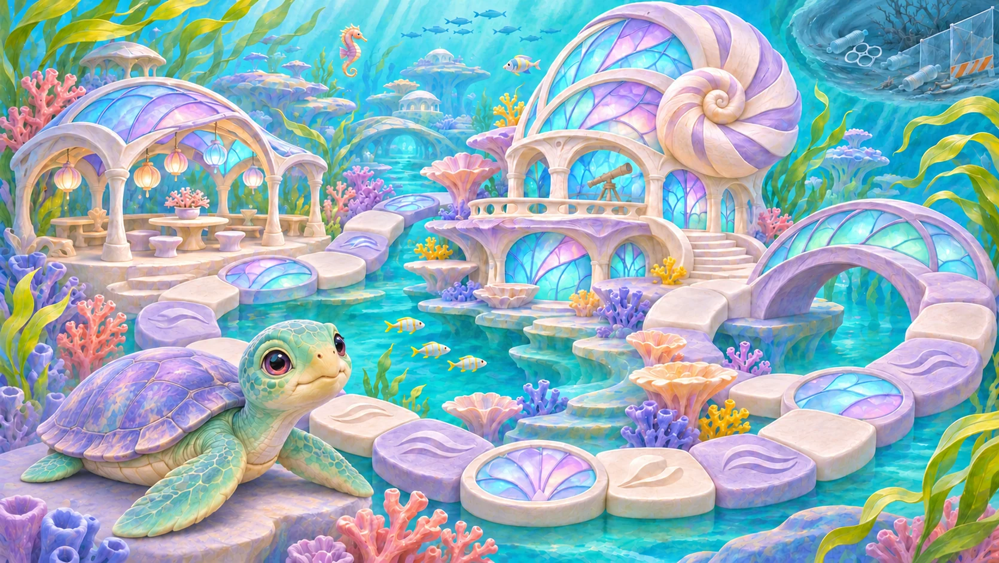
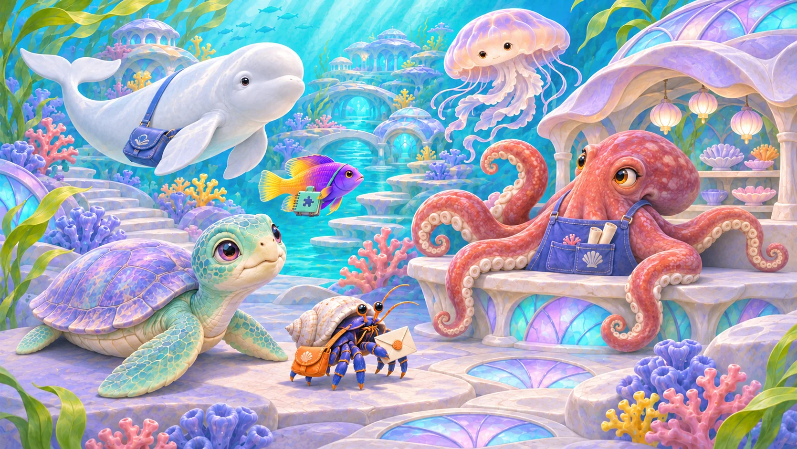
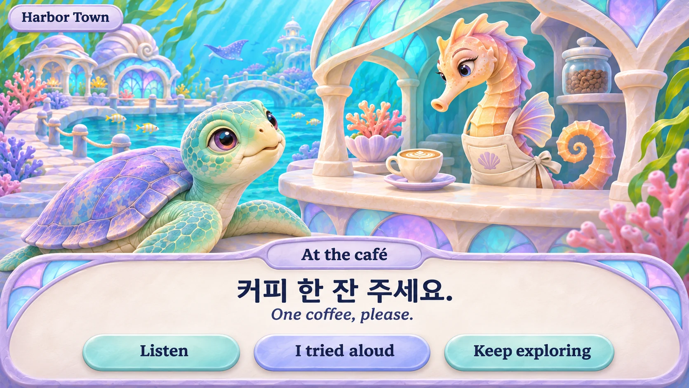
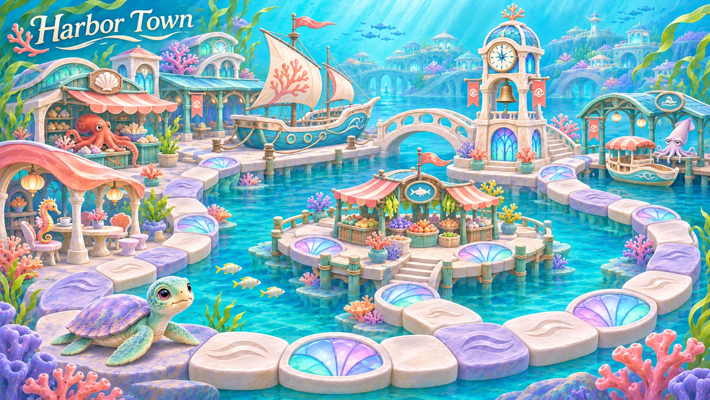
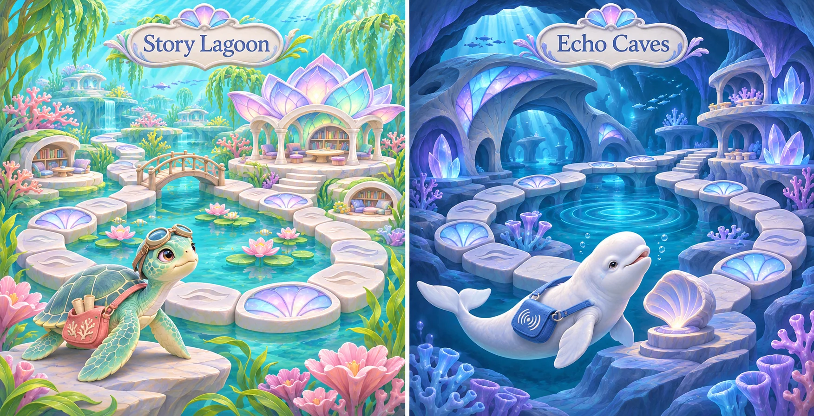
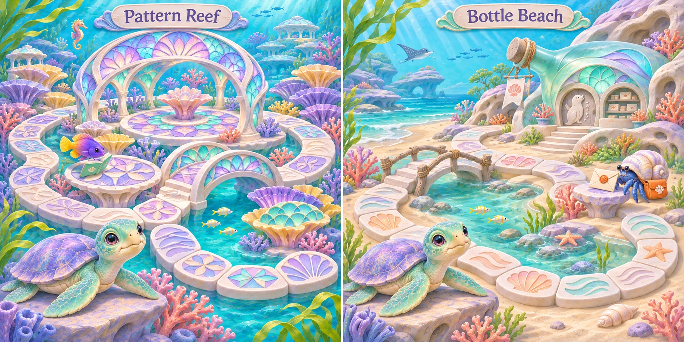
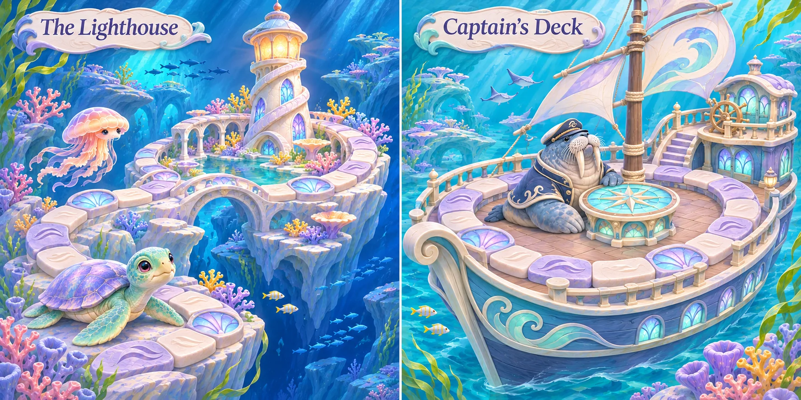

A crafted ocean. A living cast.
An illustrated world
with room to explore.
Organic marine characters, sculpted stone and satin glass. A shared art direction across the cast, eight destinations and the screens in between.
Visual redesign concepts. These are proposed artwork and screen mockups, not screenshots of an implemented game overhaul. Open any picture full size to inspect it.
Character design survey
Ten progressively baby-like Shellys.
Compare ten 3D proportion studies, each shown in the same normal and top-down views. The range moves from subtle softening toward a large-headed hatchling. Choose a favorite before changing the game’s character.
Updated in-engine preview
Shelly’s gentler face, seen from above.
Shelly now has rounder, more forward-facing eyes and a softer forehead for the elevated board camera. Roll, move along the route and change the camera to inspect her in the crafted Coral Cove. This uses a separate demonstration profile; the illustrated gallery below remains concept artwork.
Open the updated Coral Cove preview See Shelly from above
The visual prototype continues toward the approved direction. Phone frame rate has not been measured.
Coral Cove · the visual foundation
Living characters in a crafted ocean: smooth sculpted stone, softly lit satin glass and a painted reef beyond the playable path.

Characters & conversations
Living creatures. Individual personalities.
Organic skin, scales, shells and fins share the world’s soft color and light. Clothing supports each occupation; it does not turn the animals into people.
A neighborhood of marine residents
Shelly, tiny postal courier Jisu, the adult octopus shopkeeper, Echo the beluga, Pip the royal gramma and Hana the jellyfish. The revised turtle pose makes the flipper attachments clearer.

At the café · a language encounter
A close conversation brings the resident into view. A calm, mostly 2D lesson panel keeps the Korean phrase, translation and listening controls readable.

Eight destinations
A world you can recognize by its silhouette.
Coral Cove establishes the material language. The other destinations change their landmarks, route compositions, light and material balance. The pictures show visual direction; final route graphs still need gameplay validation.
Harbor Town · quays, markets and a working waterfront
A horseshoe harbor, moored ship, clock-and-bell tower and market island give the town a distinct layout. Painted timber and awnings add working-town color beside stone and restrained glass.

Story Lagoon & Echo Caves
The lagoon opens around a lily-shaped story pavilion and garden water. The caves enclose an echo basin with large blue stone arches and focused pools of light.

Pattern Reef & Bottle Beach
Rhythmic mosaic terraces and a glass ring define the reef. Warm sandstone, ivory sand and a bottle-shaped post office define the shoreline.

The Lighthouse & Captain’s Deck
A spiral stone beacon rises above a deep blue ridge. The captain’s world is a ship with a curved prow, raised stern and inset deck tiles, using more painted timber.

The production approach
Use depth where the player needs it.
Illustrated 2D
Menus, study cards, the sea chart and distant scenery. Paint surface richness and contact shading instead of building every detail.
A layered world
Use simple dimensional paths, terrain and nearby landmarks with painted surfaces. Layer distant scenery in world space so it holds together as the camera moves.
Selective 3D
Keep useful depth for tile hopping, near characters and close conversations. Load detailed residents and regional assets when they are needed.
The iPhone XS remains the performance target. These static concepts do not demonstrate frame rate; the implemented assets and camera movement will need device testing.